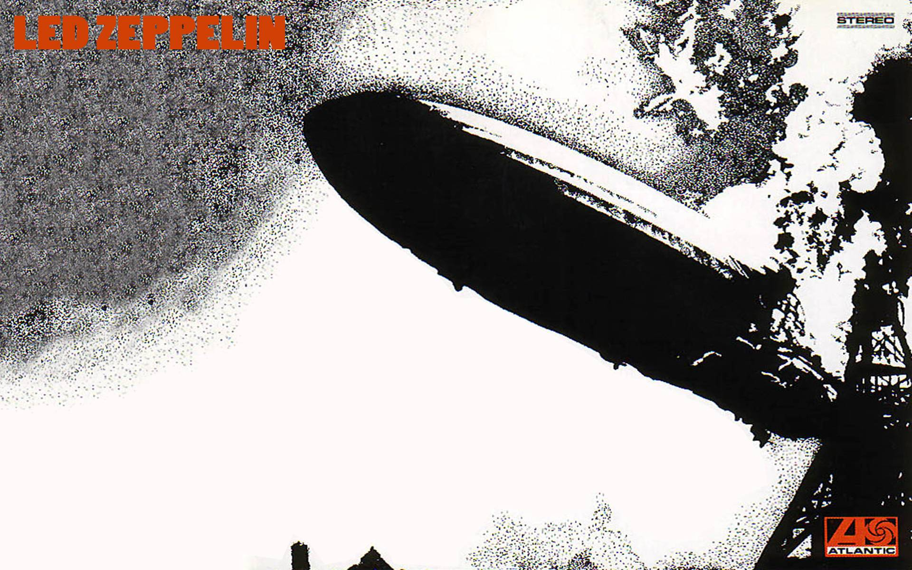

TrackList
• Good Times Bad Times
• Babe I'm Gonna Leave You
• You Shook Me
• Dazed And Confused
• Your Time Is Gonna Come
• Black Mountain Side
• Communication Breakdown
• I Can't Quit You Baby
• How Many More Times
2014 DELUXE EDITIONS BONUS TRACKS:
• Good Times Bad Times / Communication Breakdown (Live in Paris, 1969)
• I Can't Quit You Baby (Live in Paris, 1969)
• Heartbreaker (Live in Paris, 1969)
• Dazed And Confused (Live in Paris, 1969)
• White Summer / Black Mountain Side (Live in Paris, 1969)
• You Shook Me (Live in Paris, 1969)
• Moby Dick (Live in Paris, 1969)
• How Many More Times (Live in Paris, 1969)
Released 12 January 1969
TrackList
• Whole Lotta Love
• What is and What Should Never Be
• The Lemon Song
• Thank You
• Heartbreaker
• Living Loving Maid (She's Just A Woman)
• Ramble On
• Moby Dick
• Bring It On Home
2014 DELUXE EDITIONS BONUS
• Whole Lotta Love (Rough Mix With Vocal)
• What Is And What Should Never Be (Rough Mix With Vocal)
• Thank You (Backing Track)
• Heartbreaker (Rough Mix With Vocal)
• Living Loving Maid (She's Just A Woman) [Backing Track]
• Ramble On (Rough Mix With Vocal)
• Moby Dick (Intro/Outro Rough Mix)
• La La (Backing Track)
Released 22 October 1969

Tracklist
• Immigrant Song
• Friends
• Celebration Day
• Since I've Been Loving You
• Out On The Tiles
• Gallows Pole
• Tangerine
• That's The Way
• Bron-Y-Aur Stomp
• Hats Off To (Roy) Harper
2014 DELUXE EDITIONS BONUS TRACKS:
• The Immigrant Song (Alternate Mix)
• Friends (Track - No Vocal)
• Celebration Day (Alternate Mix)
• Since I've Been Loving You (Rough Mix)
• Bathroom Sound (Track - No Vocal)
• Gallows Pole (Rough Mix)
• That's The Way (Rough Mix)
• Jennings Farm Blues (Rough Mix)
• Key To The Highway/Trouble In Mind (Rough Mix)
Released: October 5, 1970